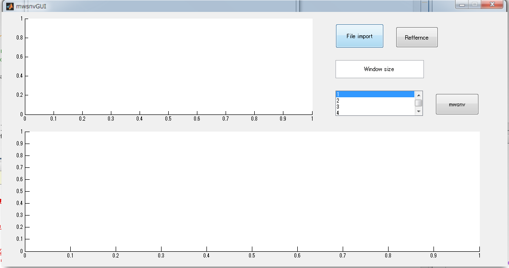

function varargout = mwsnvGUI(varargin) % MWSNVGUI MATLAB code for mwsnvGUI.fig % MWSNVGUI, by itself, creates a new MWSNVGUI or raises the existing % singleton*. % % H = MWSNVGUI returns the handle to a new MWSNVGUI or the handle to % the existing singleton*. % % MWSNVGUI('CALLBACK',hObject,eventData,handles,...) calls the local % function named CALLBACK in MWSNVGUI.M with the given input arguments. % % MWSNVGUI('Property','Value',...) creates a new MWSNVGUI or raises the % existing singleton*. Starting from the left, property value pairs are % applied to the GUI before mwsnvGUI_OpeningFcn gets called. An % unrecognized property name or invalid value makes property application % stop. All inputs are passed to mwsnvGUI_OpeningFcn via varargin. % % *See GUI Options on GUIDE's Tools menu. Choose "GUI allows only one % instance to run (singleton)". % % See also: GUIDE, GUIDATA, GUIHANDLES % Edit the above text to modify the response to help mwsnvGUI % Last Modified by GUIDE v2.5 11-May-2013 13:49:23 % Begin initialization code - DO NOT EDIT gui_Singleton = 1; gui_State = struct('gui_Name', mfilename, ... 'gui_Singleton', gui_Singleton, ... 'gui_OpeningFcn', @mwsnvGUI_OpeningFcn, ... 'gui_OutputFcn', @mwsnvGUI_OutputFcn, ... 'gui_LayoutFcn', [] , ... 'gui_Callback', []); if nargin && ischar(varargin{1}) gui_State.gui_Callback = str2func(varargin{1}); end if nargout [varargout{1:nargout}] = gui_mainfcn(gui_State, varargin{:}); else gui_mainfcn(gui_State, varargin{:}); end % End initialization code - DO NOT EDIT % --- Executes just before mwsnvGUI is made visible. function mwsnvGUI_OpeningFcn(hObject, eventdata, handles, varargin) % This function has no output args, see OutputFcn. % hObject handle to figure % eventdata reserved - to be defined in a future version of MATLAB % handles structure with handles and user data (see GUIDATA) % varargin command line arguments to mwsnvGUI (see VARARGIN) % Choose default command line output for mwsnvGUI handles.output = hObject; % Update handles structure guidata(hObject, handles); % UIWAIT makes mwsnvGUI wait for user response (see UIRESUME) % uiwait(handles.figure1); % --- Outputs from this function are returned to the command line. function varargout = mwsnvGUI_OutputFcn(hObject, eventdata, handles) % varargout cell array for returning output args (see VARARGOUT); % hObject handle to figure % eventdata reserved - to be defined in a future version of MATLAB % handles structure with handles and user data (see GUIDATA) % Get default command line output from handles structure varargout{1} = handles.output; % --- Executes on button press in fileimport. function fileimport_Callback(hObject, eventdata, handles) % hObject handle to fileimport (see GCBO) % eventdata reserved - to be defined in a future version of MATLAB % handles structure with handles and user data (see GUIDATA) [fname, dpath, findex] = uigetfile('*.csv'); if findex~=0 fpath = fullfile(dpath, fname); else disp('ファイルがありません。'); end; data = importcsv3(fpath); data = translength(data); handles.wave = data(1,:); handles.spec = data(2:end,:); % Update handles structure guidata(hObject, handles); %Plot original spectra axes(handles.preview_axes); plot(handles.wave, handles.spec); axis(handles.preview_axes, 'tight'); % --- Executes on button press in reffernce. function reffernce_Callback(hObject, eventdata, handles) % hObject handle to reffernce (see GCBO) % eventdata reserved - to be defined in a future version of MATLAB % handles structure with handles and user data (see GUIDATA) [fname, dpath, findex] = uigetfile('*.csv'); if findex~=0 fpath = fullfile(dpath, fname); else disp('ファイルがありません。'); end; ref = importcsv4(fpath); ref = translength(ref); handles.refferncevalue = ref(:,1); % Update handles structure guidata(hObject, handles); function windowsize_Callback(hObject, eventdata, handles) % hObject handle to windowsize (see GCBO) % eventdata reserved - to be defined in a future version of MATLAB % handles structure with handles and user data (see GUIDATA) val = str2double(get(hObject,'String')); handles.ws = val; % Update handles structure guidata(hObject, handles); % Hints: get(hObject,'String') returns contents of windowsize as text % str2double(get(hObject,'String')) returns contents of windowsize as a double % --- Executes during object creation, after setting all properties. function windowsize_CreateFcn(hObject, eventdata, handles) % hObject handle to windowsize (see GCBO) % eventdata reserved - to be defined in a future version of MATLAB % handles empty - handles not created until after all CreateFcns called % Hint: edit controls usually have a white background on Windows. % See ISPC and COMPUTER. if ispc && isequal(get(hObject,'BackgroundColor'), get(0,'defaultUicontrolBackgroundColor')) set(hObject,'BackgroundColor','white'); end % --- Executes on selection change in fmax. function fmax_Callback(hObject, eventdata, handles) % hObject handle to fmax (see GCBO) % eventdata reserved - to be defined in a future version of MATLAB % handles structure with handles and user data (see GUIDATA) %Determine maximum number of latent variables str = get(hObject,'String'); val = get(hObject,'Value'); switch str{val}; case '1' handles.fmaxvalue = 1; case '2' handles.fmaxvalue = 2; case '3' handles.fmaxvalue = 3; case '4' handles.fmaxvalue = 4; end % Update handles structure guidata(hObject, handles); % Hints: contents = cellstr(get(hObject,'String')) returns fmax contents as cell array % contents{get(hObject,'Value')} returns selected item from fmax % --- Executes during object creation, after setting all properties. function fmax_CreateFcn(hObject, eventdata, handles) % hObject handle to fmax (see GCBO) % eventdata reserved - to be defined in a future version of MATLAB % handles empty - handles not created until after all CreateFcns called % Hint: listbox controls usually have a white background on Windows. % See ISPC and COMPUTER. if ispc && isequal(get(hObject,'BackgroundColor'), get(0,'defaultUicontrolBackgroundColor')) set(hObject,'BackgroundColor','white'); end % --- Executes on button press in mwsnv. function mwsnv_Callback(hObject, eventdata, handles) % hObject handle to mwsnv (see GCBO) % eventdata reserved - to be defined in a future version of MATLAB % handles structure with handles and user data (see GUIDATA) [SSR]=mwsnv4gui(handles.spec,handles.refferncevalue,handles.fmaxvalue,handles.wave,handles.ws); w = handles.wave; ws = handles.ws; axes(handles.result_axes); plot(w(1:end-ws+1),(SSR(2,:)),'m',w(1:end-ws+1),(SSR(1,:)),'r',w(1:end-ws+1),(SSR(end,:)),'b'); set(handles.result_axes,'YScale','log'); axis(handles.result_axes,'tight');